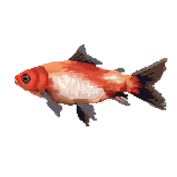

Aquascaping Techniques
Aquascaping is the art of arranging aquatic plants, rocks, and decorations inside an aquarium.
Nature style uses plants and driftwood to resemble natural landscapes like forests and mountains.
Why is Aquascaping Important?
Aquascaping helps improve the environment inside the tank. It provides shelter for fish and helps water stay clean by supporting plant growth.
Basic Tools Used
- Plant Scissors – to trim plants neatly
- Aquascaping Tweezers – to place small plants
- Substrate Shovel – to shape the sand and soil
Fish Compatibility & Common Misconceptions
Good Fish Combinations
- Guppies + Neon Tetras
- Mollies + Corydoras
- Platies + Swordtails
Bad Fish Combinations
- Betta + Guppies
- Goldfish + Tropical Fish
- Oscar + Any Small Fish
- "You don't need a filter for small tanks"
- "All fish can live together"
- "Fish don’t need much space"
- Proper pairing is important for fish health!
Uses of Aquariums
Relaxation
Watching fish swim helps reduce stress and provides a calming environment.
Fun Fact
Some hospitals use aquariums in waiting areas to lower patients' anxiety levels.
Education
Aquariums are used in schools and homes to learn about underwater life and ecosystems.
Fun Fact
Some aquariums hold live classes where students can interact with marine biologists.
Decoration
They make homes, offices, and waiting rooms more peaceful and beautiful.
Fun Fact
Designer aquariums can be custom-built into walls, furniture, or even coffee tables!
View This Website on Your Phone
Scan the QR code below to open this site on your mobile device for the full experience.
Feed the Fish
Drag the correct item into the fish tank to feed your fish!
Drop the correct item here!
Submit Your Favourite Fish
Fish Food Animation Preview
This example uses a sprite technique to show a hover animation using pixel art.